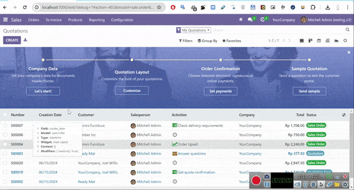

The DOCX Report Generator is a powerful Odoo module that helps you create professional reports using only a .docx template and Jinja syntax. Generate customized documents directly from your Odoo data with support for images, HTML content, subdocuments, and advanced formatting.
Olivier Remacle www.ormdoo.com
This module inspired from Report Xlsx. and from module of Ali Ns here
Before installing this module, make sure to install the following libraries:
For Python 3.12 and above:
pip install git+https://github.com/tvuotila/docxcompose.git@hotfix/90 docxtpl htmldocxFor Python below 3.12:
pip install docxcompose docxtpl htmldocxDesign your report template in Microsoft Word (.docx) using Jinja syntax to reference Odoo fields like {{docs.field_name}}.
In Odoo, create a DOCX Report Configuration, select the model, upload your template, and choose output mode (composer, zip, or pdf).
Print your report from any Odoo record - the module automatically fills in the template with actual data and generates a professional document.
For usage instructions, you can refer to the following video: Watch Tutorial

Example template for sale order: example_OpenFuture.docx
Documentation on writing syntax in the document: https://docxtpl.readthedocs.io/en/stable
To call and write the field name, use the following format: {{docs.field_name}}, starting with the word "docs".
{{spelled_out(docs.numeric_field)}}: Spell out numbers{{formatdate(docs.date_field)}}: Format dates{{parsehtml(docs.html_field)}}: Render HTML content as plain text{{p html2docx(docs.html_field)}}: Render HTML as subdocument{{convert_currency(docs.monetary_field, docs.currency_id)}}: Show monetary field{{render_image(docs.image_field)}} or {{render_image(docs.image_field, width=10, height=10)}}: Render image in millimeters{{r rich_text(docs.text_field)}}: Show Rich Text{{p add_subdoc(docs.docx_binary_field)}}: Add Subdocument{{replace_image('file_name_in_word', docs.image_field)}}: Replace the dummy picture in word document with another one{{replace_media('file_name_in_word', docs.image_field)}}: Unlike replace_pic() method, dummy_header_pic.jpg MUST exist in the template directory when rendering and saving the generated docx.{{replace_embedded('file_name_in_word', docs.binary_field)}}: It works like medias replacement, except it is for embedded objects like embedded docx{{replace_zipname('file_path_in_word', docs.binary_field)}}: replace_embedded() may not work on other documents than embedded docx. Instead, you should use zipname replacementNote: These functions will be updated as needed.
The language is automatically detected from the user's Odoo settings, but it can be overridden. For example: {{spelled_out(docs.numeric_field, lang='en_US')}} {{formatdate(docs.numeric_field, lang='en_US')}} {{convert_currency(docs.numeric_field, locale='en_US')}}
For format_date and convert_currency, you can use all parameter from babel function Babel Documentation
There are three modes for generating docx reports:
If you want to use the 'pdf' option, ensure you have installed LibreOffice. Then set the LibreOffice path in Settings => Technical => Parameters => System Parameters, and search for the key default_libreoffice_path. Set the value according to the LibreOffice installation path:
/usr/bin/libreofficeC:\Program Files\LibreOffice\program\soffice.exe
Odoo Version: 19.0
License: LGPL-3
Depends: base, web
Special thanks to Salvo (salvorapi) for helping to update the code from Odoo 16 to Odoo 17.
We welcome any feedback and suggestions, especially for improving this module. Thank you!
Website: www.ormdoo.com